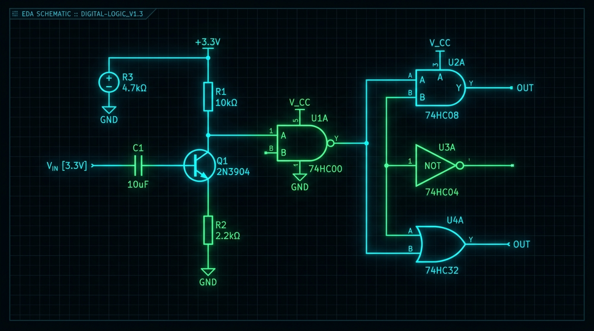

Open-Source Contributor
- Delivered TCL and C-based structural upgrades for Xschem, a robust & open-source alternative to Cadence Virtuoso.
- Authored and merged complex schematic grid-snapping logic and orthogonal wire placement algorithms.
- Directly improved circuit design workflows and graphical wire routing for end-users.